DES
What is DES?
DES is a symmetric encryption method that is no longer considered secure. However, it does provide a good introduction into what common symmetric algorithms are like. It was founded more than fifty years ago, in the early 70s, and began industrial use by the end of the decade. However, it was soon cracked due to its small key size, leading to an offspring to develop - triple DES. However, even with it's descendant, triple-DES, the algorithm is no longer commonly used. It has been replaced with the current industrial standard, AES.
Pre-Requisites
In order to understand DES, you're going to need an understanding of the follow topics:
Intro to Encryption
Symmetric Encryption
Terms and Symbols
$$\oplus = XOR$$
Conceptual Explanation
What is DES?
Think of DES as an overly complex maze. Hard to solve due to its long, dull, and often repetitive nature. DES is essentially this, with the added security of using a key. In comparison to RSA, where the encryption process is simply passing a number through an equation, DES is a long winding, repetitive process. (For computers, RSA decryption is still slower than DES, as passing a number through the RSA equation takes a lot longer than applying the DES algorithms, because it’s just easier for a computer).
DES is also what we can a “symmetric-key algorithm”. In other words, the encryption process is the same as the decryption process. In comparison, for example, RSA uses a trapdoor to decrypt, instead of working backwards (remember: it’s a one way function!). So, in order for someone to decipher a DES-encrypted message, they must know the key used and then apply the steps same encryption steps backwards.
This raises a slight (okay, more than slight) concern. How do I get the key to the person I want? Unlike RSA, where we can just publish a public key and use our private key, DES requires that both the person encrypting and the person decrypting use the same key. In fact, a lot of times for symmetric-key algorithms (like DES and AES), non-symmetric encryption methods are used to encrypt and exchange symmetric keys. Most notably, rsa and the diffie-hellman key exchange.
The Rubik's Cube Analogy
Think of DES as a Rubik’s Cube. (NOTE: This is actually spelled Rubik’s cube, not rubix cube. Look it up. Blew our minds too...) The “message” or “plaintext” that we are sending is a specific arrangement of the Rubik’s Cube (NOTE: we are not sending a solved Rubik’s Cube, but a certain arrangement. Thus common Rubik’s Cube solving algorithms don’t work - that gives us a “solved” Rubik’s Cube, not the orientation we want). Let’s say, for example, that each square represents a different letter and it spells out a message left to right on the face of the Rubik’s Cube.
Alright, back to the classics. Alice has the Rubik’s Cube and wants to send her message to Bob. In order to do so, she has to pass the Rubik’s Cube past Eve, so she has to “scramble” her message somehow, so that Bob can unscramble it, but Eve can’t. Now, being the smart friends they are, Alice and Bob had previously agreed on a Rubik’s Cube key, in the case of an urgent need to send a secret message. The key they agreed on was a set of Rubik’s Cube moves.
Now back to the present. Alice needs to scramble the message to Bob. In order to do so, she uses the “key” they agreed on previously, along with a set amount of moves in between to make sure the Cube is sufficiently scrambled. She does a set, say four moves, and then does the first move that her and Bob had agreed upon. Then she does the same set of four moves and uses the next move in the key. And so forth. By the time she has used up the key, the Rubik’s Cube probably doesn’t resemble anything that it had started with.
Now, Alice passes the Cube past Eve and to Bob. And even if Eve knew the set four moves being repeated (say, she saw Alice turning it), she would not be able to remember the entire key sequence. Now, using the set four moves and the key, Bob only has to work backwards and undo the Cube, extracting Alice’s message.
In the case of a 3x3 Rubik’s Cube, Eve might be able to try Rubik’s combinations until she gets the message that Alice was trying to send. But with a huge Rubik’s Cube, and a longer key, the message gets harder and harder to solve. DES is just like that Rubik’s Cube. It gains its security through its complex repetition, along with the use of a key at each iteration.
As years past and computers got faster, DES was not enough. DES is now considered to be “broken”, meaning it can be cracked. A genius solution was created, however. Just make the keys and steps longer. And thus, Triple-DES was born. To find out more, please visit this page. But in case you’re too lazy to go to the next page, he’s a brief and definitely not comprehensive explanation of Triple-DES. Ready? Here it is: the key size is tripled and the steps are repeated three times. Wait, let me repeat that to make sure you understood. You literally just triple everything you do in DES.
Mathematical Explanation
Pre-requisites:
Bit-wise operations
Understanding of binary in general
What is DES?
The mathematics of DES are in essence a long series of complex operations to make a message as scrambled as possible. In each of these steps, a key is used to give the ciphertext a unique twist. Thus, even though the explicit steps to be taken are public, the key ensures that someone cannot just go apply the operation backwards.
As a result, DES can be split into two main components. First: key generation. Due to the fact that DES is a repetitive algorithm, repeating one function 16 times, each “subkey” has to be different and is derived from the previous one. Thus, an 8-byte character is used as the initial key and 16 subkeys are generated from it.
The second portion would be the encryption itself. This involves a certain structure called the “Feistel Structure” which is repeated each step of the way. Although it is not complex mathematically, it can often be confusing to follow.
Additional elements are the first permutation and final permutation. These two simply scramble the initial plaintext before entering the Feistel Structure and once more (with a different scramble) before being sent out as a ciphertext.
Sub-Key Generation
Now, how does RSA actually work? The entire process will be broken down into two sections: Encrypt and Decryption. However, there will be equations and theorems used that are not proved in the document. For more in-depth proofs, refer to the links.
We must start with a key that is 64 bits long. Most commonly, this would be 8 characters, or 16 hexadecimal numbers (a pair of hexadecimal numbers is representative of a character). In turn, this is translated to 8 binary bytes, each 8 bits long. So now you have an initial key, made up of 64 0s and 1s.Key = xxxxxxxx xxxxxxxx xxxxxxxx xxxxxxxx xxxxxxxx xxxxxxxx xxxxxxxx xxxxxxxx
Through this process, however, we will reduce each subkey to a size of 48 bits (cutting out 16 0s and 1s) to make it compatible for later. This will be done in a two step process. First, we will generate the 16 subkeys in a left 28-bit array and a right 28-bit array, totaling 56 bits. Then, they will be combined and reduced to a 48-bit array.
Through this process, however, we will reduce each subkey to a size of 48 bits (cutting out 16 0s and 1s) to make it compatible for later. This will be done in a two step process. First, we will generate the 16 subkeys in a left 28-bit array and a right 28-bit array, totaling 56 bits. Then, they will be combined and reduced to a 48-bit array.
We begin with our initial key, K. This is a direct text/hexadecimal to binary translation from the key we input. K is first processed using PC-1, “Permuted Choice 1”. This just takes the initial 64 bits and scrambles them, while removing the last bit of each byte.. Additionally, in this process, the resulting 56-bits are split into a left 28-bits and a right 28-bits. Here’s the table used (this is the same table used in every iteration of DES: 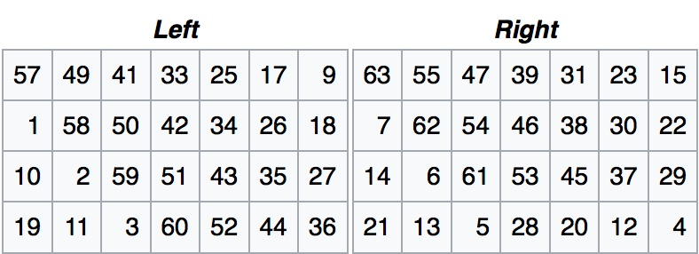
(each bit is transmuted to this table, so the 57th bit is first on the left bit array, and the 63rd bit is first on the right bit array.)
Once we’ve done this, we have our first subkey, or at least two halves of it! Let’s call the left half L0 and the right half R0. From here, we will generate the next 15 subkeys. In order to do so, we simply apply left bit-shifts. This means exactly what it sounds like: you take all the bits and shift them to the left. When the leftmost bit shifts left, it loops back around and becomes the rightmost. For example, if we were to apply a single left bit shift to “01000”, it would become “10000”. If we were to apply another single left bit shift, it would become “00001”.
For each subkey, we simply apply a left-bit shift to the previous one. For the number of bits shifted, we refer to the table (once again, the same for every iteration of DES): 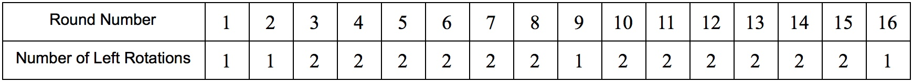
After applying the bit shifts, we have 16 subkeys, each split into a left and right portion. Each half is 28 bits, totalling to 56 bits. However, there’s one more step. Remember, we need a 48 bit key, not a 56 bit key!
Here, we use another Permuted Choice table. In this case, we use “PC-2”. This will take the left and right halves and combine them together, eliminating 8 bits and giving us our 48 bit key. 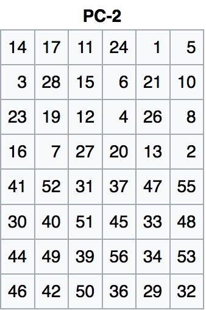 And that's it! We do this step for each of the 16 subkeys, and we have our final set of keys! Now onto the encryption...
Encryption
DES encryption is based around something called the “Feistel Structure”. Essentially, it's just a set of operations that the DES algorithm applies to a plaintext over and over again.
The Feistel Structure just gives a way for repeatedly scrambling a plaintext. To begin, the message is split into 64 bit blocks. Each block is then split into equal left and right blocks (each 32-bits), L0 and R0. During the structure, the right block is passed through a “Feistel Box”, which applies a few set operations and incorporates the subkey into the current round. The result will be also a 32-bit block. Then, this block is binary or’ed (XORed) with the left block, L0. For the next round, the XOR result becomes the new right block, R1. The initial R0 block becomes the new L1 block. Then, the operation is repeated, with R1 passing through the Feistel Box and incorporating the second subkey, K2. This is then XORed with L1 and passed into the next round. This operation happens 16 times during standard DES. 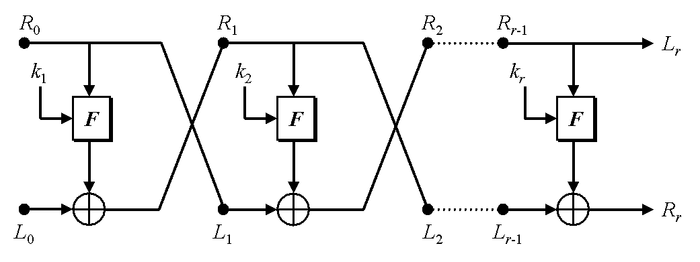
This is where the majority of the scrambling happens. Remember, it’s only the right block going through the Feistel Box (F-box), thus the entering block is 32-bits. For this, let’s just call that block R0.1. The first step in the F-box is an expansion function. What this does is it takes the 32-bit block and expands it to 48-bits (by duplicating half). To do this, we use “expansion function” table, as shown to the right. This is so that we can implement the subkey. Remember, the subkeys are all 48 bits!
2. After we have our 48-bit expanded block, we binary or (XOR) with the subkey.
3. We split the result of the XOR into 8 6-bit blocks
4. Each block uses a different substitution box (S-box) to reduce the 6-bits to 4-bits
5. We are now back to 32-bits total, but we need to do one last step. Rearrange the bits again! (via a permutation table)
Once R0 has been passed through the F-box, it is then XOR'ed with L0. 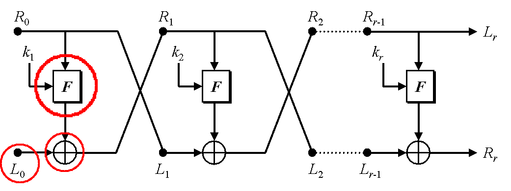Finally, R0 becomes the new L1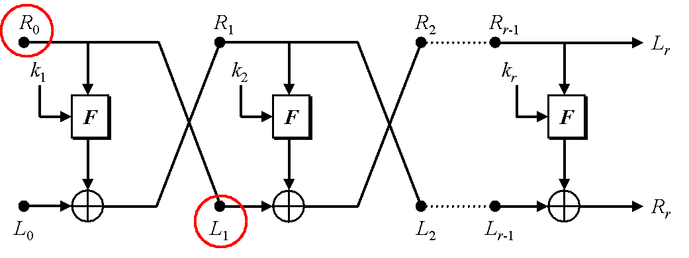And the result of the XOR becomes the new R1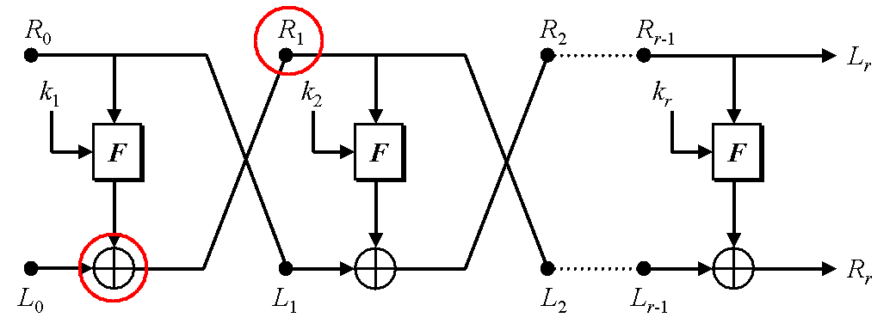
Worked Example
Due to the repetition involved in DES, we will only do one round of the Feistel Structure to simplify. We will use "message!" as our example plaintext and "secretk!" as our key.
Sub-key Generation
To begin, we have to first convert our key into a format that we can use. As with nearly all encryption methods, we will be working in Binary. Thus, we will first convert "secretk!" to binary (using any ASCII to binary converter).
s
01110011e
01100101c
01100011r
01110010e
01100101t
01110100k
01101011!
00100001Bear with me here. I know there's a whole lot of numbers up above and it may look confusing, but that's okay. I mean, these algorithms were literally meant to confused the most powerful computers, so you can be a little confused.
Now that we have our key in binary form, we can begin! The first step is a permutation function - permuted choice 1, or PC-1. In more common terms, this just means rearranging the numbers and removing a couple of them. As was said in the mathematical explanation above, one goal of the key generation process is the reduce the keys form 64 bits to 48 bits. This first step will get us halfway to our goal, reducing our key to 56 bits. Additionally, the key will be split into two 28-bit blocks, left and right. To apply PC-1, we use the following table:We will call the left block \(C_0\) and the right block \(D_0\). To fill out \(C_0\), we simply have to refer to the left half of PC-1. The first bit of \(C_0\) will be the 57th bit of our original key, the second bit the 49th, the third bit the 41st, and so forth.
Interestingly, this follows a pattern. If we split our initial key into 8 bytes of 8 bits, 57, 49, 41, 33... are simply the first bits of the eight bytes, starting from the end. Take a look:
Now we iterate through the rest of PC-1 and create \(C_0\) and \(D_0\). Finally, we get:$$C_0$$ 0000000
0011111
1111111
1110010
$$D_0$$ 0100110
1001100
1001000
0001001
Next, we need to create the subkeys. For DES, the Feistel Structure continues for 16 rounds, so we need 16 subkeys. To do so, we simply apply left shifts to both \(C_0\) and \(D_0\) according to the following table:
We will only be using the first key for this demo, but the process of shifting is the same to create the rest.
We apply a left shift to both \(C_0\) and \(D_0\) to get our first subkey!:$$C_1$$ 0000000
0111111
1111111
1100100
$$D_1$$ 1001101
0011001
0010000
0010010
For the next subkey, shift once again.
$$C_2$$ 0000000
1111111
1111111
1001000
$$D_2$$ 0011010
0110010
0100000
0100101
Normally, we would do this for all 16, but to save time and space, we'll just show the first two. I think you all get the point.
Now all that's left is to apply permuted choice 2 (PC-2). This re-arranges each key once again and reduces the total size to 48 bits (exactly what we want!). First, let's recap what we have.
1. We took our key and turned it into binary.
2. We used our PC-1 table to get a \(C_0\) and \(D_0\).
3. We used left shifts to create subkeys.
This is where we are right now:$$C_1$$ 0000000
0111111
1111111
1100100
$$D_1$$ 1001101
0011001
0010000
0010010
At this point, we can combine the left and right sections to form one whole key. So, \(C_1\) + \(D_1\) becomes \(K_1\). Now we're going to apply PC-2 to what we so far. To do so, we'll refer to the following table:
Using this table is the same as any other lookup table. The first bit of the new subkey is the 14th bit of \(K_1\), and the second bit of the new subkey is the 17th bit of \(K_1\) and so forth.
One important thing is the final reduction of bits. Notice that previously there were 7 bits per row and now it's reduced to 6 bits per row. You know what that means? We've hit the 48-bit size that we wanted!
After PC-2, our subkey becomes:
$$K_1$$ 111000
001011
111010
100110
010001
000110
001000
010011
Now we have our finalized subkey! Of course, we would have to repeat this 15 more times for each other subkey, but we're going to just stick with this key. And finally, time to move on to encryption!
Encryption
Alright, so now we got our subkeys. Easy peasy. Kinda. Now for the exciting part: encryption!
Just like we did to begin key generation, we have to first get the message in a form that easily understood by computers. To do so, we'll take our message and turn it into binary.
"message!" -->
m
01101101e
01100101s
01110011s
01110011a
01100001g
01100111e
01100101!
00100001Before we jump into encryption, however, let's review the steps of DES.
Shown below is the Feistel Structure. This is the crux of the algorithm - DES is simply a multi-round repetition of this. To begin, our original plaintext is scrambled and split into two halves, using the initial permutation function. 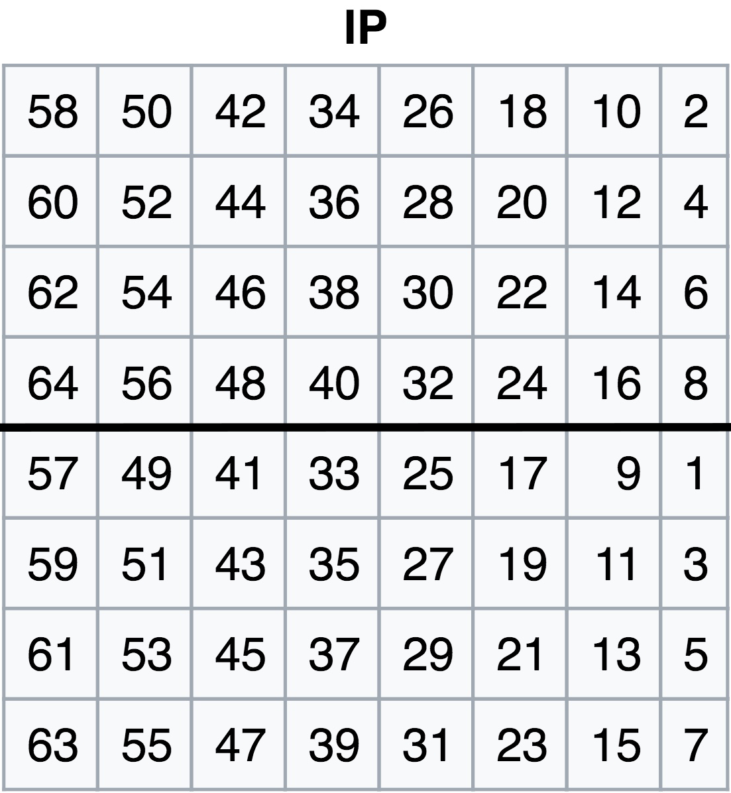
The two separate blocks are called \(L\) and \(R\) (left and right). In the table above, the top half would become \(L_0\) and the bottom half would be \(R_0\). 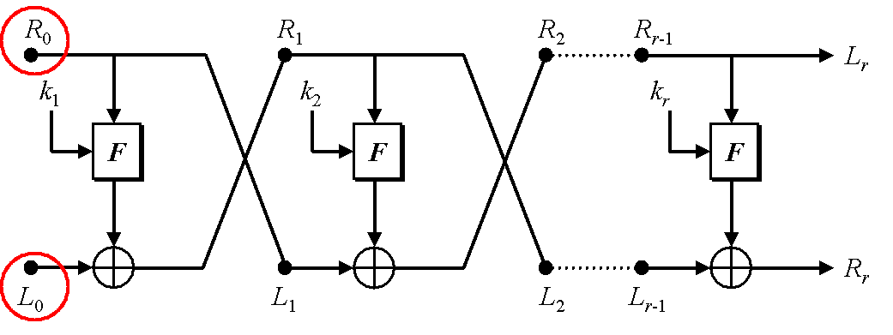 The initial right block, \(R_0\) is passed through an "F-box" (Feistel Box), which applies a multi-step scrambling function. 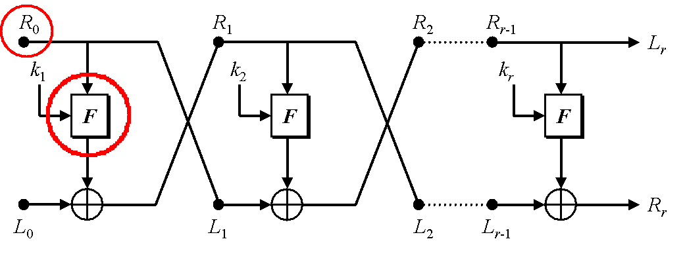 During the F-box, the round subkey is incorporated as well. Thus, even though the steps in the F-box are public knowledge, the function still has a private element. 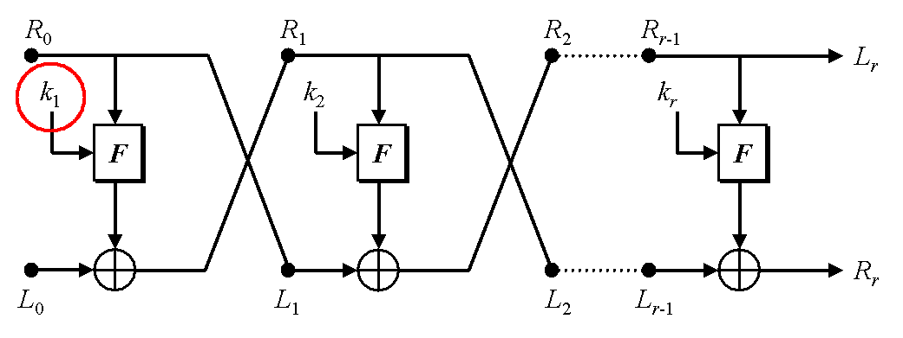 Next, the original left half, \(L_0\) and the result of the F-box are XORed (binary exclusive or). The result of this XOR then becomes the right block for the next round. In this case, the result of the XOR becomes \(R_0\). Finally, the initial right block becomes the next left block. In this case, \(R_0\) comes \(L_1\). This process is repeated 16 times for DES, following the same pattern, but using a different round subkey each time.
Now that we have a grasp on how the Feistel Structure works, let's get into it!
First, we have to apply the initial permutation to our plaintext.m
01101101e
01100101s
01110011s
01110011a
01100001g
01100111e
01100101!
00100001So, the first bit of our left block, \(L_0\) is the 58th bit of our plaintext. The second bit of \(L_0\) is the 50th bit of the plaintext. The third bit is the 42nd bit of the plaintext. And so forth.
After we apply our initial permutation, we get the following:
$$L_0$$ 01111111
00001100
01100011
11111111
$$R_0$$ 00000000
11111111
00000001
00101100
Onto the Fiestel Box!
Now, as (I hope) you recall, we are at this point: Next, we have to pass the right block, \(R_0\) through the F-box. The F-box, or the Feistel Box, is the meat of the algorithm. It is what DES repeats sixteen times, or in the case of triple-DES, 48 times. The steps for the F-box are simple:
1. Use an expansion function to duplicate half the bits and get to 48 bits.
2. XOR with 48 bit subkey
3. Split into 8 6-bit blocks and use substitution boxes to reduce each block to 4 characters
4. Re-combine using a permutation function that also rearranges the bits
1: Expansion FunctionIn this, we will take our right block and expand it to 48-bits, using the following table: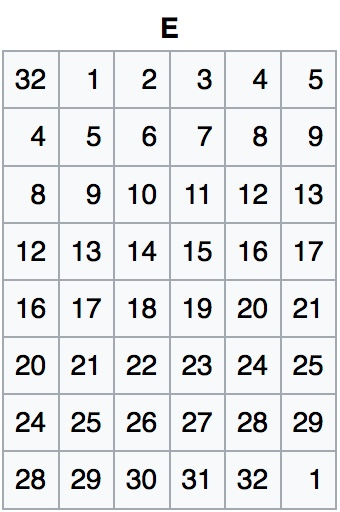$$R_0$$ 00000000
11111111
00000001
00101100
Thus, the first bit of our expanded \(R_0\) is the 32nd (last bit) of our original \(R_0\), and so forth. An interesting pattern is used while applying the expansion function: The bits are added in the order that they were originally in, but they repeat the last two bits of the previous row. 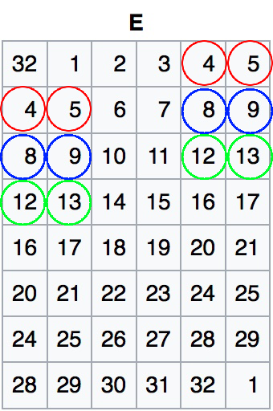
After applying the expansion function, we get the following:
000000
000001
011111
111110
100000
000010
100101
011000
Now that we have our 48-bit expanded block, we can finally implement our round subkey! To do so, we simply XOR (binary exclusive or) the round subkey and the 48-bit block. We won't cover how the operation works, but if you do not already know, please refer to intro to encryption.000000 000001 011111 111110 100000 000010 100101 011000
111000 001011 111010 100110 010001 000110 001000 010011
111000 001010 100101 011000 110001 000100 101101 001011
Next, we will pass the result of the XOR through a couple of substitution boxes (S-box). What these do is take a 6-bit block and spit out four bits. So, we split the 48-bits into 8 6-bit blocks, and pass each through a different S-box. Then, we get a 32-bit block output.In each individual S-box, the 6-bit blocks are split into two components: the end bits (first and last bits) and the middle four bits. These two form the two criteria for the S-box. For example, with the first 6-bit block from our result, we have 111000. Now we split it into two: the end bits are "1 0" and the middle bits are "1 1 0 0".
Next we refer to the S-box. Because this is the first block of 6-bits in the whole 48-bits, we use S-box number one. If we were to be using the second 6-bits, we would S-box number two, and so forth.
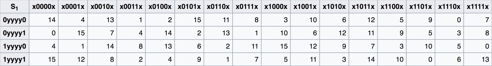
Now, using our end bits (10) and middle bits (1100) we can find our result.
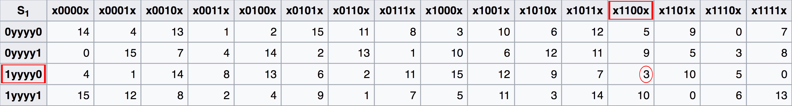
But wait! That's a 3! That's not a 4-bit block! Well, the 3 ends up becoming a 4-bit-block. Using S-boxes, all the results are integers between 0 and 15. As a result, there are 16 different possible options. 16 options? As in \(2^4\) options? Yup - just translate the 3 into binary! $$3 = 0011$$ At this point, we simply have to apply correct S-box to each following block. However, we won't show all those steps in this example because it's just repetition of what we've already done. To find the rest of the S-boxes, wikipedia has a great page reference page (that includes all the other functions, as well as the S-boxes) here .
After applying the S-boxes, we get the following:
0011 1011 1101 1011 0110 1010 1010 0011
Last step of the F-box! Now, we just pass our 32-bits into one last permutation function. In other words, we just refer to a table to re-arrange the bits one last time. We go row by row, starting from 16, 7, 20, 21... and so forth. 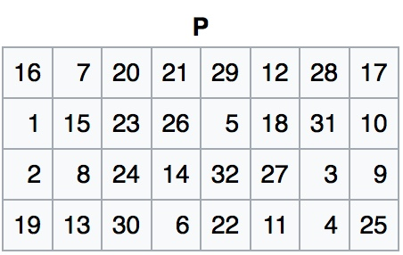After applying the permutation function, our 32-bit block is passed out of the F-box:
1101 0100 0110 1111 0100 1111 1100 0011
We're onto the last step of the Feistel Structure round!Now all we have to do is combine \(L_0\) and \(R_0\). To do so, we use another XOR (I know... there are so many of them):
1101 0100 0110 1111 0100 1111 1100 0011
0111 1111 0000 1100 0110 0011 1111 1111
1010 1011 0110 0011 0010 1100 0011 1100
And there we have it! Our final 32-bit block. Well that wasn't too bad, was it? Yeah, okay. That was pretty bad.
Anyways, that was the first round. If we were doing a full encryption, we would repeat this at least 15 more times. The 32-bit block we arrived at would become the new \(R_1\). The original \(R_0\) block would become our new \(L_1\).And repeat!